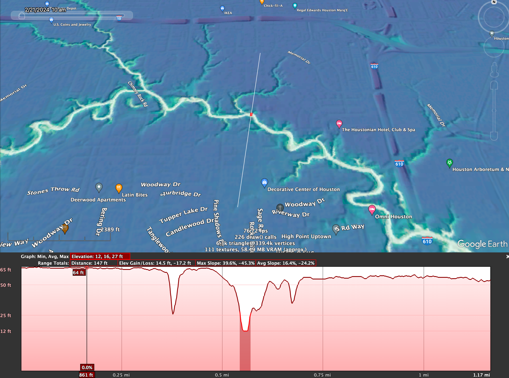

Rock Outcrops Along Buffalo Bayou
This site provides interactive visualizations of geologic field data collected along Buffalo Bayou in Houston, Texas.
📄 Associated Publication
The outcrop photos and data visualized here were used in:
Patterson, P., Kendall, J., Schwartz, A., Novello, J., Gaston, W., Lang, R., West, D., Gosses, J., & Wachtman, C. (2025).
Sedimentology, Sequence Stratigraphy, Diagenesis, and Paleogeographic Reconstruction of the Beaumont Formation,
Late Pleistocene, Buffalo Bayou, Houston, Texas. Houston Geological Society Bulletin, June 2025.
[PDF]
Choose a View
🗺️ Large Map View
A single large interactive map showing all data layers. Click on icons to see outcrop images, bedding plane strike/dip measurements, and field notes as pop-ups.
Open Large Map →🔗 Four Linked Maps
Four synchronized maps (topo, geologic, street) that pan and zoom together. Click anywhere to see the location across all maps and get geologic unit info from Macrostrat.
Open Four Maps →📷 Photo Gallery
A scrollable gallery of all outcrop photos with descriptions and mini location maps. Great for viewing photo details without needing to click through map popups.
Open Gallery →About the Data
This repository serves as both a visualization tool and a data archive for geologic observations along Buffalo Bayou collected by the Houston Geological Society working group.
Data includes:
- Outcrop photos with location coordinates
- Bedding plane strike and dip measurements
- Lineament mapping from field observations and LIDAR
- Regional fault traces (from subsurface seismic)
- Nearby well locations
You can also download or fork the GitHub repository to work with the data directly.
Data Sources & Credits
Geologic Field Data: Collected using the Midland Valley Clino app by Jerry Kendall and the HGS Buffalo Bayou working group.
Base Maps:
- Macrostrat geologic map API
- OpenStreetMap
- ESRI World Imagery and Topographic maps
Note: Regional fault traces shown are mapped from subsurface seismic and are mostly not exposed at the surface. Their geographic positions should be considered approximate.
Related Resources (digital elevation models)
The Python code for creating Relative Elevation Maps (REM) that was originally part of this repository has moved to a separate project: buffalo_bayou_geology_REM
That work formed the basis of the blog post: "Houston has topography: Looking at why Buffalo Bayou does not drain to the sea, directly" and may be of interest for seeing small changes in geomorphology along Buffalo Bayou and in comparison to other surrounding river systems.

Field trip safety
Although outcrops along Buffalo Bayou may be of interest to the many geologists in Houston due to the scarcity of outcrops along the Texas coastal plain, please remember that these locations are only visible at low water levels and can be dangerous to access. Always prioritize safety, be aware of weather conditions, and obtain any necessary permissions before visiting field sites. Many of these sites require a kayak or canoe to access which requires proper safety equipment and experience. Access by foot is often not posssible and when possible involves traversing slippery slopes next to water, which would require use of a PFD and may be too much of a an atheltic challenge for some individuals. Most photos were taken when the USGS guage at Shepard street was near 1-2 feet.